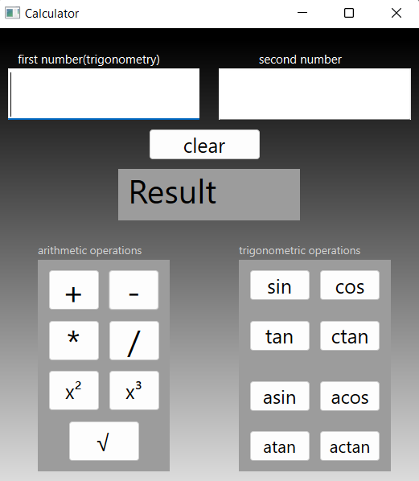

Документация проекта
Модуль:
Список требований:
1) Пооперационная разработка проекта, в которой указан перечень
конкретных действий с указанием выходов, сроков и ответственных.
2) Разделение проекта на Back-end и Front-end части.
3) Реализация Front-end части и подключение к ней Back-end.
4) Сборка проекта.
Калькулятор
1.Целью данного данного проекта является создание программы "Калькулятор",
которая и будет являться объектом исследования.
1.1 Калькулятор - устройство для арифметических вычислений.
1.2 Мы пользуемся простыми калькуляторами для математических вычислений
в школе и для подсчета денег в магазине. Ученые, инженеры и статистики
пользуются другими калькуляторами, способными выполнять сложные операции.
1.3 "Мозг" калькулятора может только складывать и вычитать.
1.4 Умножение и деление он выполняет путем многократного сложения или вычитания.
1.5 Обычный калькулятор выполняет сложение и вычитание, умножение и деление,
а также вычисляет проценты. Любое число, которое вы вводите в калькулятор,
преобразуется в бинарный код, а результаты в бинарном коде переводятся обратно
в десятичную систему и отображаются на дисплее. Когда вы набираете числа
на клавиатуре, в регистры памяти калькулятора вводятся бинарные коды
для операндов и арифметических действий (сложения, вычитания, умножения и деления).
2. Арифметический блок выполняет действие и сохраняет результат в одном из регистров.
2.1. Затем результат пересылается в память дисплея и отображается в десятичной форме
на дисплее. Целью данного проекта является приобретение и закрепление навыков
в организации вычислительных процессов и программирования на языке С++,
изучение жизненного цикла разработки программного обеспечения (ПО),
изучение методологии проектирования ПО, выполнение проектирования и разработки
проекта в целом и его отдельных модулей, формирование списка требований,
тестирование, документирование проекта, внедрение и сопровождение ПО,
совместная работа в команде.

Product backlog
Как разработчики, мы хотим внедрить основные функции
калькулятора в наше приложение, чтобы пользователи
проводили вычисления над числами с большей точностью
и удобством.
Как пользователь, я хочу использовать приложение
“Калькулятор”, чтобы выполнять арифметические операции
с более практичным дизайном.